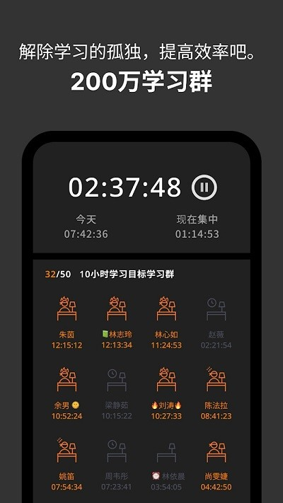

市面上学习计时器那么多，Yeolpumta 为什么值得单独说？
从番茄钟到习惯养成应用，自律赛道从来不缺产品。但 Yeolpumta 靠一套群组成长体系和赛道排名，在备考党里站稳了脚跟。这篇聊聊它和同类工具比到底差在哪、好在哪。
自律工具这个品类已经卷了快十年。番茄钟、专注森林、各种打卡 App——你能想到的玩法别人都做过一遍。但 Yeolpumta 有一点不一样：它不是让你自己跟自己较劲，而是把「自律」这件事做成了一场群体活动。
定位：同类工具里的「组队型选手」
市面上大多数学习计时器走的是两条路。一条是极简个人派，界面干净、只管计时和统计，代表就是系统自带的计时器加上各种番茄钟变种；另一条是游戏化派，用种树、养宠物、解锁成就来给用户反馈，专注森林属于这一类。
Yeolpumta 走的是第三条路——把学习计时和社交绑定在一起。核心逻辑很简单：你不是一个人在学，而是加入一个群组，和一群目标相同的人一起计时、一起冲排名。这个思路在韩国高考圈已经跑了很多年，现在中文用户也越来越多。
它的Yeolpumta官网可以直接下载，首次注册完会让你选赛道——高考、考研、公务员考试、语言学习……不同赛道有独立的全国排名和专属功能。选完之后，一个属于你的学习小组就可以拉起来了。

差异化一：赛道排名，把模糊的「努力」变成看得见的数字
同类工具也有统计功能，但大多停留在「你今天学了多久」这个层面。Yeolpumta 多做了一步：把你的时长放进整个赛道的实时排名里。
高考赛道是目前用户量最大的赛道，活跃用户数十万。默认显示周榜，也能切日榜和月榜。社区里总结过一个大致的时长参照：Top 1% 的用户日均 8 到 10 小时，Top 10% 在 5 到 7 小时之间。当然这些数字随时间波动很大，考前冲刺期整体时长都会往上飘。
关键不是那个排名数字本身，而是你能看到自己的趋势。连续一周每天多出半小时，排名往上跳个几百名，这种正反馈比单纯的「连续打卡 X 天」要实在得多。Yeolpumta 还支持单科目排名——比如高考数学全国用时排名，独立于总赛道排名。
这一点是系统自带计时器和大多数极简工具做不到的。那些工具的统计只服务于你自己，而 Yeolpumta 的统计天然带参照系。
差异化二：起床认证，用群组压力倒逼规律作息
Yeolpumta 有个起床认证的功能，在同类产品里不算常见。设置一个早晨截止时间（比如 6:30），截止前在 App 里点一下「我起床了」，就能拿到积分计入群组内的早起排名。
积分规则也设计得挺有意思，我后来翻了Yeolpumta文档才弄明白具体怎么算：截止前打卡基础 10 分，连续 7 天以上额外加 5 分，群组内当日前 10 名再额外加 3 分。连续打卡的天数越多，单次积分越高。
还有个补打卡机制——当天学习时长超过一定阈值，可以申请补打一次，每月有次数上限。这解决了偶尔睡过头但学习量达标的尴尬。
这个功能的巧妙之处在于，它把「早起」从一个个人目标变成了一个群组竞争项。学习时长可以靠熬夜补，但早起打卡拼的是真正的自律。两种排行榜独立运行，互相不替代。适合有早自习习惯的学生党，也适合想建立规律作息的在职备考者。
差异化三：通知和离线体验，细节上做足了
从官方下载拿到安装包装好 Yeolpumta 之后，通知系统值得花两分钟配置一下。它的通知做得很细——计时器开始、结束、番茄钟切换、暂停超时、每日目标完成、D-Day 临近、群组新动态……每一类通知都可以单独控制声音、振动、横幅、状态栏图标，还能设置免打扰时段。
更实用的是和专注模式的配合。开启专注模式后可以自动打开系统勿扰，屏蔽所有第三方应用通知，但 Yeolpumta 自己的计时提醒可以单独放行。计时器结束后自动关闭勿扰，无缝衔接。
离线计时也做得稳。没有网络的时候，启动、暂停、结束计时全部本地执行，历史统计、科目管理、To-do 列表都能正常用。只有群组和排名功能需要联网。离线期间的数据变化会标记为「待同步」，恢复网络后自动批量上传，不打断使用。
还有手动补录时长的功能——之前用其他计时工具记录的、手机异常导致数据丢失的、某段时间没开 App 但确实学了的，都可以在统计页找到对应日期补录。补录数据会被标记，群组成员能看到是手动补的，而且每月有上限，防止恶意刷数据。

取舍：这些优势背后的代价
说了这么多好的，Yeolpumta 也不是没有代价。
首先是上手门槛。赛道选择、群组管理、积分规则、通知配置……第一次打开要设置的东西比极简番茄钟多不少。对只想打开按一下计时的人来说，这套流程可能显得重了。
其次是平台限制。Yeolpumta 主打移动端，桌面端功能相对有限。如果你主要在电脑上学习，用它记录时长需要在手机上挂着，或者用手动补录兜底。
再者，群组和排名是双刃剑。有人觉得是动力，有人觉得是压力。看到别人日均学 8 小时自己只有 4 小时，焦虑感是实实在在的。Yeolpumta 自己也在文档里提醒「不要拿自己的绝对时长和别人比，排名只是参考」。但道理都懂，做起来还是难。
选购结论
如果你是备考党，尤其是需要组队互相监督的那种，Yeolpumta 值得一试。赛道排名给你方向感，群组给你归属感，起床认证给你额外的自律维度——这三样叠在一起，比单纯的番茄钟或打卡 App 管用得多。
如果你只是想偶尔计一下学习时间、不需要社交、讨厌设置流程，那系统自带计时器或者一个极简番茄钟就够了。Yeolpumta 的社交属性对你来说反而是负担。
还有一点值得提：Yeolpumta 有详细的进阶文档，起床认证的积分规则、离线同步的注意事项、高考赛道的专属功能都写得很清楚。遇到问题可以去翻一翻，比自己瞎琢磨省时间。
总的来说，Yeolpumta 把「自律」这件事从一个人的修行变成了一群人的同行。它不一定适合所有人，但对正在备考、需要一点外部压力和同伴氛围的人来说，它可能是你找了很久的那个工具。
文档维护同步放在了三个代码仓库里，海外用户看 GitHub 最方便，国内访问慢的话可以切到 Gitee 或 GitCode，内容是一样的。